<title>Archer Landing Concepts</title>
<meta name="claude:viewport-fit-sides" content="cover">
<link rel="preconnect" href="https://fonts.googleapis.com">
<link rel="preconnect" href="https://fonts.gstatic.com" crossorigin>
<link rel="stylesheet" href="https://fonts.googleapis.com/css2?family=Newsreader:opsz,wght@6..72,400;6..72,500&family=Geist:wght@400;500;600&family=Geist+Mono:wght@400&display=swap">
<style>
  /* A contact sheet: one wide row per concept, picture first, notes beside it.
     Archer's own warm-neutral ramp and green accent, so the concepts carry the colour. */
  :root {
    --bg: #fbfaf8;
    --surface: #ffffff;
    --ink: #1a1916;
    --ink-2: #5f5a52;
    --ink-3: #8f897f;
    --line: #e7e3dc;
    --accent: #0c8c5e;
    --shade: rgba(26, 25, 22, 0.08);
    --serif: "Newsreader", Georgia, "Times New Roman", serif;
    --sans: "Geist", ui-sans-serif, system-ui, -apple-system, "Segoe UI", sans-serif;
    --mono: "Geist Mono", ui-monospace, "SF Mono", Menlo, Consolas, monospace;
  }
  @media (prefers-color-scheme: dark) {
    :root:not([data-theme="light"]) {
      --bg: #0f1012; --surface: #161719; --ink: #ecebe7; --ink-2: #a5a19a; --ink-3: #75716a;
      --line: #26292d; --accent: #23c088; --shade: rgba(0, 0, 0, 0.5); color-scheme: dark;
    }
    :root:not([data-theme="light"]) .shot-light { display: none; }
    :root:not([data-theme="light"]) .shot-dark { display: block; }
  }
  :root[data-theme="dark"] {
    --bg: #0f1012; --surface: #161719; --ink: #ecebe7; --ink-2: #a5a19a; --ink-3: #75716a;
    --line: #26292d; --accent: #23c088; --shade: rgba(0, 0, 0, 0.5); color-scheme: dark;
  }
  :root[data-theme="dark"] .shot-light { display: none; }
  :root[data-theme="dark"] .shot-dark { display: block; }

  * { box-sizing: border-box; }
  body {
    background: var(--bg);
    color: var(--ink);
    font: 15px/1.6 var(--sans);
    -webkit-font-smoothing: antialiased;
  }
  .wrap {
    max-width: 1240px;
    margin: 0 auto;
    padding-left: max(16px, env(safe-area-inset-left, 0px));
    padding-right: max(16px, env(safe-area-inset-right, 0px));
  }
  a { color: inherit; }
  a:focus-visible, button:focus-visible { outline: 2px solid var(--accent); outline-offset: 3px; border-radius: 4px; }

  header.wrap { padding-block: 72px 40px; display: grid; gap: 20px; }
  .eyebrow { font: 12px/1 var(--mono); letter-spacing: 0.08em; text-transform: uppercase; color: var(--ink-3); }
  h1 {
    margin: 0;
    font: 500 clamp(40px, 6vw, 72px)/1 var(--serif);
    letter-spacing: -0.015em;
    text-wrap: balance;
    max-width: 14ch;
  }
  .intro { margin: 0; max-width: 62ch; font-size: 17px; line-height: 1.65; color: var(--ink-2); }

  .sheet { display: grid; gap: 0; padding-block: 8px 40px; }
  .concept {
    display: grid;
    grid-template-columns: minmax(0, 1.55fr) minmax(0, 1fr);
    gap: clamp(24px, 4vw, 56px);
    align-items: start;
    padding-block: 44px;
    border-top: 1px solid var(--line);
  }
  .shot {
    display: block;
    border-radius: 8px;
    overflow: hidden;
    border: 1px solid var(--line);
    box-shadow: 0 18px 50px -24px var(--shade);
    transition: transform 300ms cubic-bezier(0.2, 0.7, 0.2, 1), box-shadow 300ms;
  }
  .shot img { display: block; width: 100%; height: auto; aspect-ratio: 1440 / 900; max-width: 100%; }
  .shot-dark { display: none; }
  .shot:hover { transform: translateY(-3px); box-shadow: 0 26px 60px -24px var(--shade); }
  @media (prefers-reduced-motion: reduce) { .shot, .shot:hover { transition: none; transform: none; } }

  .notes { display: grid; gap: 14px; min-width: 0; }
  .notes h2 { margin: 0; font: 500 34px/1.05 var(--serif); letter-spacing: -0.01em; }
  .pitch { margin: 0; color: var(--ink-2); max-width: 52ch; }
  dl { margin: 4px 0 0; display: grid; gap: 12px; }
  dl div { display: grid; gap: 2px; }
  dt { font: 11px/1.4 var(--mono); letter-spacing: 0.08em; text-transform: uppercase; color: var(--ink-3); }
  dd { margin: 0; font-size: 14px; color: var(--ink-2); }
  dd q { color: var(--ink); quotes: "“" "”"; }
  .open {
    justify-self: start;
    margin-top: 6px;
    display: inline-flex; align-items: center; gap: 8px;
    padding: 9px 14px;
    border-radius: 6px;
    background: var(--ink); color: var(--bg);
    font-weight: 500; font-size: 14px; text-decoration: none;
  }
  .open svg { width: 14px; height: 14px; }

  .verdict {
    border-top: 1px solid var(--line);
    padding-block: 56px 72px;
    display: grid;
    grid-template-columns: minmax(0, 1fr) minmax(0, 1.6fr);
    gap: clamp(24px, 4vw, 56px);
  }
  .verdict h2 { margin: 0; font: 500 34px/1.05 var(--serif); }
  .verdict p { margin: 0 0 14px; color: var(--ink-2); max-width: 62ch; }
  .verdict strong { color: var(--ink); font-weight: 600; }
  footer.wrap { padding-block: 24px 48px; border-top: 1px solid var(--line); font: 12px/1.5 var(--mono); color: var(--ink-3); }

  @media (max-width: 820px) {
    header.wrap { padding-block: 44px 24px; }
    .concept, .verdict { grid-template-columns: minmax(0, 1fr); padding-block: 32px; }
  }
</style>

<header class="wrap">
  <span class="eyebrow">tryarcher.dev · landing page · six directions</span>
  <h1>Six ways to open Archer</h1>
  <p class="intro">Each concept is a complete landing page built around one idea, with a light and a dark theme, a phone layout and the real Acme sample. Open one, scroll the whole way, and try the interactive parts. The pictures show the first screen at 1440 pixels wide in your current theme.</p>
</header>

<main class="wrap sheet">

  <article class="concept" id="blueprint">
    <a class="shot" href="blueprint.html" aria-label="Open the Blueprint concept">
      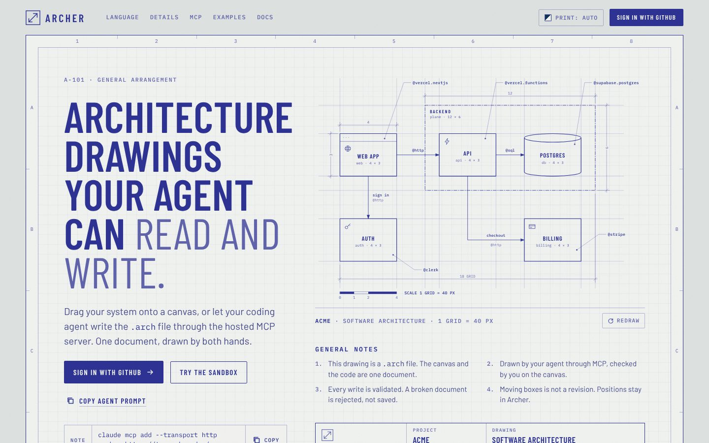
      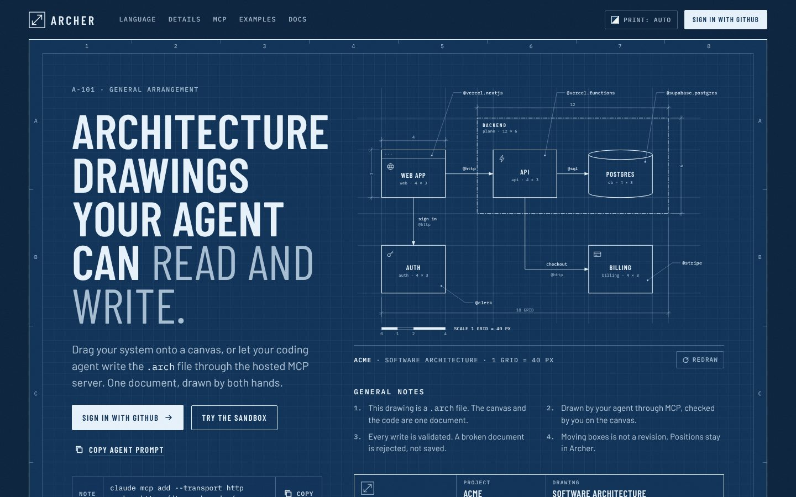
    </a>
    <div class="notes">
      <h2>Blueprint</h2>
      <p class="pitch">The page is a set of architectural drawing sheets, A-101 to A-105. Dark mode is a cyanotype blueprint and light mode a diazo whiteprint. The hero draws the Acme system in front of you, then the rest of the product is told with real drafting conventions.</p>
      <dl>
        <div><dt>Headline</dt><dd><q>Architecture drawings your agent can read and write.</q></dd></div>
        <div><dt>What moves</dt><dd>The drawing inks itself over a pencil underlay, with dimensions, leader callouts and a scale bar. Hovering a component lights its line in the spec sheet and back. A Blueprint / Render toggle fills the drawing in. History is shown with revision clouds and a revision table.</dd></div>
        <div><dt>Type</dt><dd>Barlow Condensed lettering, Barlow, IBM Plex Mono</dd></div>
      </dl>
      <a class="open" href="blueprint.html">Open Blueprint <svg viewBox="0 0 16 16" fill="none" stroke="currentColor" stroke-width="1.8" aria-hidden="true"><path d="M3 8h10M9 4l4 4-4 4"/></svg></a>
    </div>
  </article>

  <article class="concept" id="duet">
    <a class="shot" href="duet.html" aria-label="Open the Duet concept">
      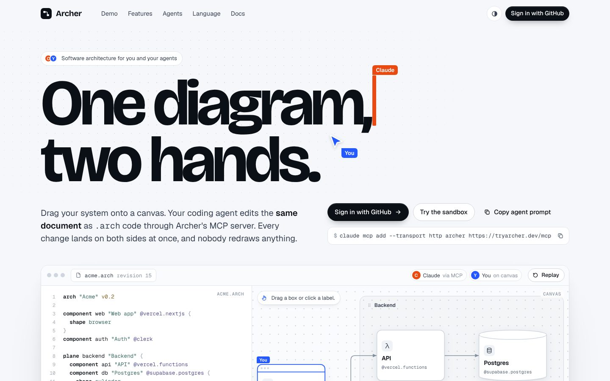
      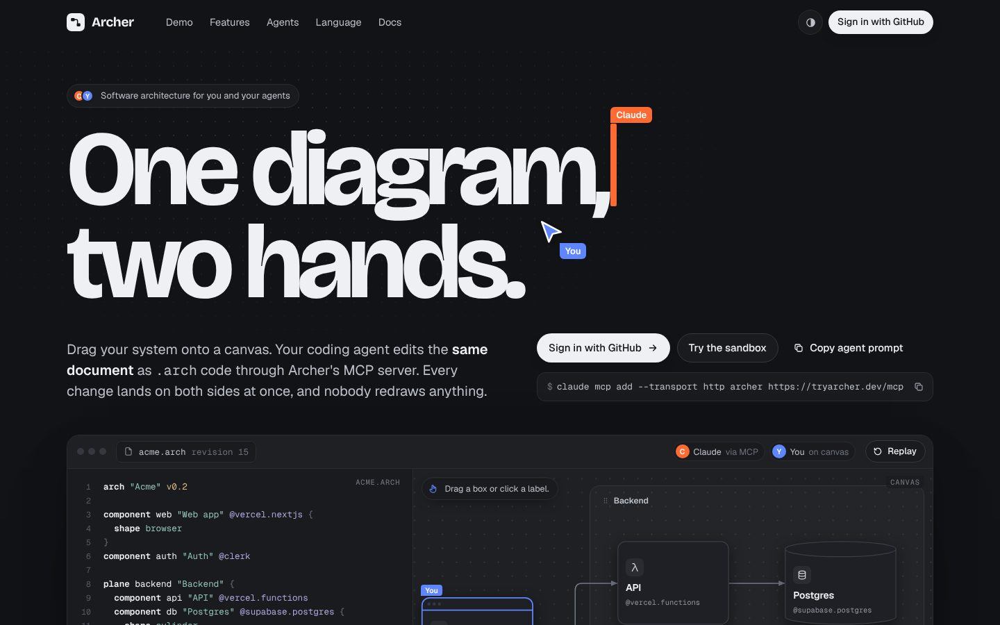
    </a>
    <div class="notes">
      <h2>Duet</h2>
      <p class="pitch">One document, two hands. A cursor labelled Claude types <code>.arch</code> code while a cursor labelled You drags boxes, and both sides stay in step. Every feature below the hero is a small working demo.</p>
      <dl>
        <div><dt>Headline</dt><dd><q>One diagram, two hands.</q></dd></div>
        <div><dt>What moves</dt><dd>A 14-second loop: Claude adds a cache and its connection, You drag the web app, Claude renames Billing. Visitors can take over: drag nodes, rename labels, open the nested API, watch a broken agent edit get rejected with E101, edit a validated JSON payload.</dd></div>
        <div><dt>Type</dt><dd>Bricolage Grotesque, Geist, Geist Mono</dd></div>
      </dl>
      <a class="open" href="duet.html">Open Duet <svg viewBox="0 0 16 16" fill="none" stroke="currentColor" stroke-width="1.8" aria-hidden="true"><path d="M3 8h10M9 4l4 4-4 4"/></svg></a>
    </div>
  </article>

  <article class="concept" id="deep-field">
    <a class="shot" href="deep-field.html" aria-label="Open the Deep Field concept">
      
      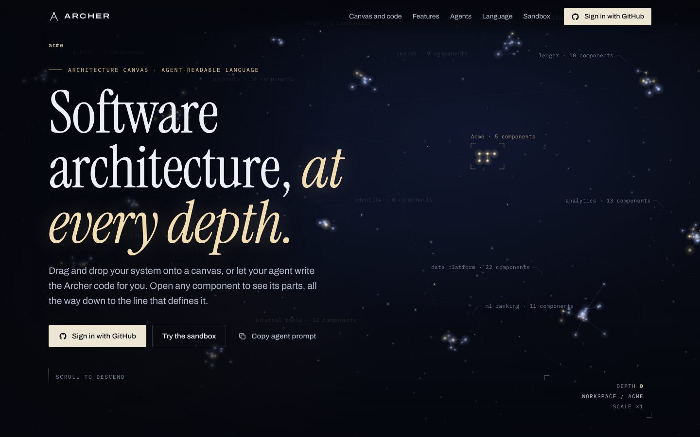
    </a>
    <div class="notes">
      <h2>Deep Field</h2>
      <p class="pitch">Powers of Ten for software. Scrolling is one continuous zoom: a star field of a company's systems, into the Acme system, inside its API, down to the line of <code>.arch</code> that defines it. Dark only, on purpose.</p>
      <dl>
        <div><dt>Headline</dt><dd><q>Software architecture, at every depth.</q></dd></div>
        <div><dt>What moves</dt><dd>About 670 drifting points in labelled clusters that follow the pointer. A sticky stage zooms through four depths, roughly ×1 to ×140, with a breadcrumb and depth gauge. Further down, a draggable canvas runs an agent edit you can review.</dd></div>
        <div><dt>Type</dt><dd>Instrument Serif, Archivo, IBM Plex Mono</dd></div>
      </dl>
      <a class="open" href="deep-field.html">Open Deep Field <svg viewBox="0 0 16 16" fill="none" stroke="currentColor" stroke-width="1.8" aria-hidden="true"><path d="M3 8h10M9 4l4 4-4 4"/></svg></a>
    </div>
  </article>

  <article class="concept" id="maquette">
    <a class="shot" href="maquette.html" aria-label="Open the Maquette concept">
      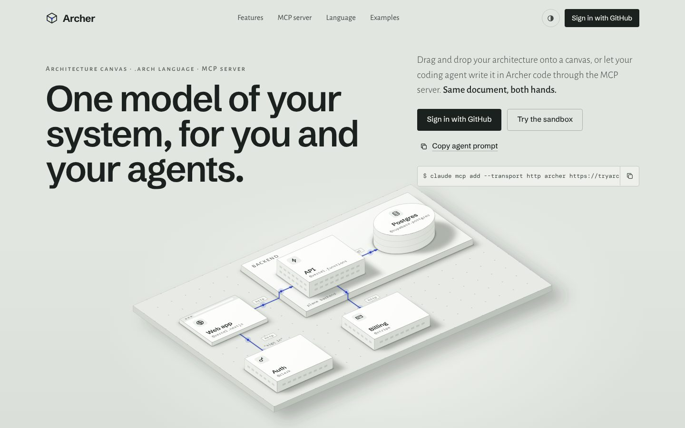
      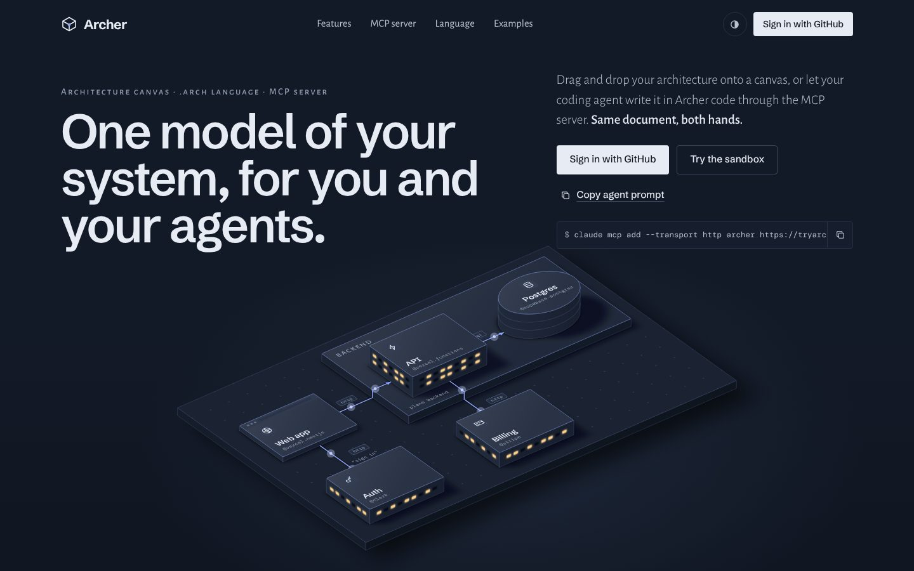
    </a>
    <div class="notes">
      <h2>Maquette</h2>
      <p class="pitch">Your system as an architect's scale model. Acme stands on a base board as matte card blocks: Backend is a raised plinth, Postgres a cylinder, and threads with travelling packets run between them. At night the windows light up.</p>
      <dl>
        <div><dt>Headline</dt><dd><q>One model of your system, for you and your agents.</q></dd></div>
        <div><dt>What moves</dt><dd>A Plan view switch swings the camera overhead until the model flattens into the 2D canvas. A Code switch slides the source in, and hovering a block lifts it and lights its lines. Features are small models: a lid lifted off Billing to show its parts, three revisions side by side, pin figures for team roles.</dd></div>
        <div><dt>Type</dt><dd>Schibsted Grotesk, Alegreya Sans and its small caps, DM Mono</dd></div>
      </dl>
      <a class="open" href="maquette.html">Open Maquette <svg viewBox="0 0 16 16" fill="none" stroke="currentColor" stroke-width="1.8" aria-hidden="true"><path d="M3 8h10M9 4l4 4-4 4"/></svg></a>
    </div>
  </article>

  <article class="concept" id="syntax">
    <a class="shot" href="syntax.html" aria-label="Open the Syntax concept">
      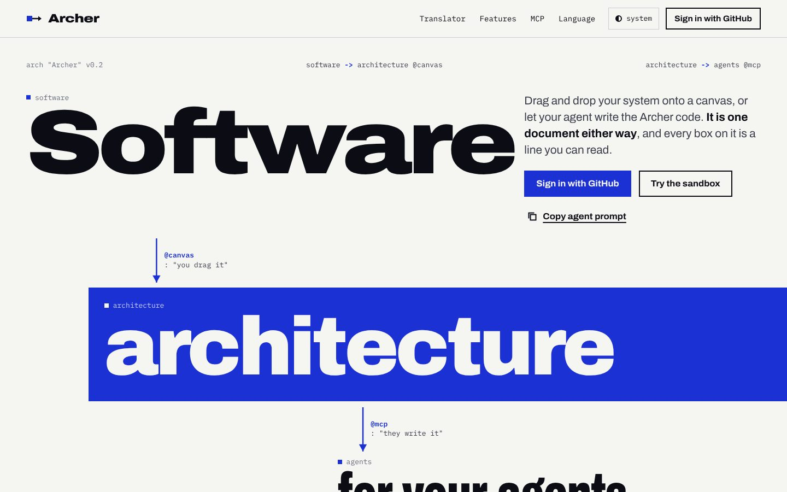
      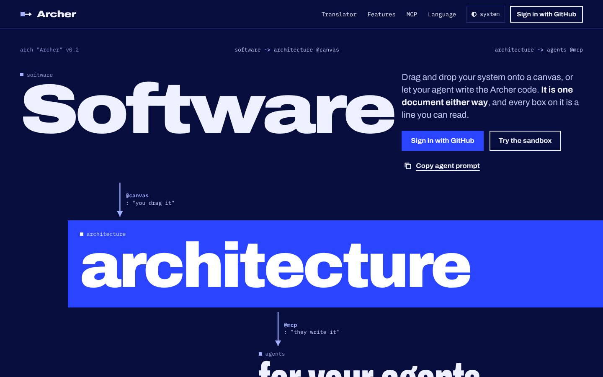
    </a>
    <div class="notes">
      <h2>Syntax</h2>
      <p class="pitch">A Swiss poster where the words are the components. Archer's language already reads like sentences, so the headline is a three-node diagram with protocol labels on its arrows, and one cobalt field colour does all the shouting.</p>
      <dl>
        <div><dt>Headline</dt><dd><q>Software → architecture → for your agents.</q></dd></div>
        <div><dt>What moves</dt><dd>Arrows draw in, and hovering a word dims everything it isn't connected to. A translator steps through the Acme source one line at a time and builds the diagram. Visitors can write their own line and get Archer-style errors like <code>expected "-&gt;" after "api"</code>.</dd></div>
        <div><dt>Type</dt><dd>Archivo in three widths, IBM Plex Mono</dd></div>
      </dl>
      <a class="open" href="syntax.html">Open Syntax <svg viewBox="0 0 16 16" fill="none" stroke="currentColor" stroke-width="1.8" aria-hidden="true"><path d="M3 8h10M9 4l4 4-4 4"/></svg></a>
    </div>
  </article>

  <article class="concept" id="whiteboard">
    <a class="shot" href="whiteboard.html" aria-label="Open the Whiteboard concept">
      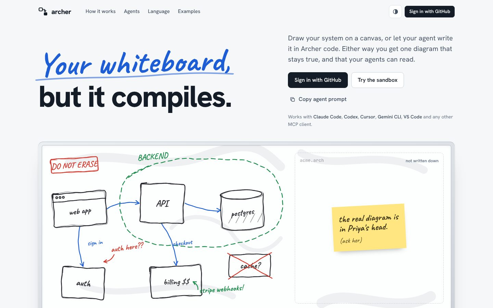
      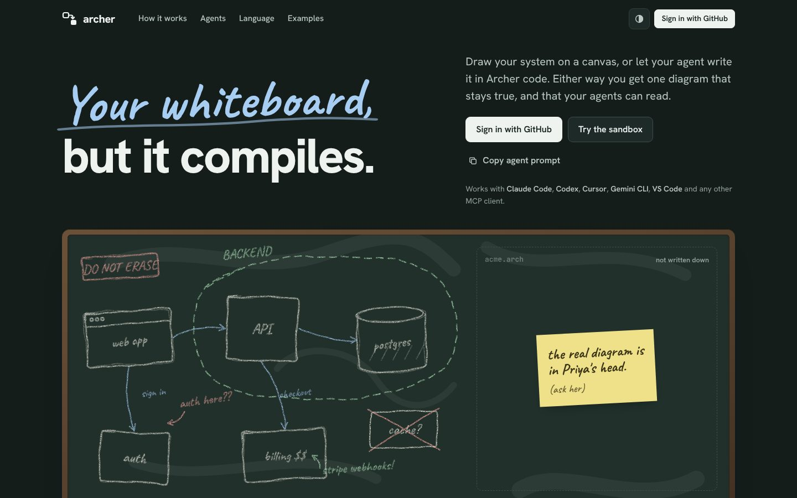
    </a>
    <div class="notes">
      <h2>Whiteboard</h2>
      <p class="pitch">Every architecture starts as a sketch that goes stale the day it's drawn. The page opens on a marker whiteboard of Acme and turns it into the clean Archer diagram while the source writes itself. Dark mode is a chalkboard.</p>
      <dl>
        <div><dt>Headline</dt><dd><q>Your whiteboard, but it compiles.</q></dd></div>
        <div><dt>What moves</dt><dd>Wobbly strokes straighten and snap to the grid, scrawl becomes set type, the margin notes fly into the cards as <code>desc</code> text, and the sticky note peels off the code panel. A Sketch / Source switch and a scrub slider let visitors play it back. Four before-and-after rows follow.</dd></div>
        <div><dt>Type</dt><dd>Caveat, Hanken Grotesk, JetBrains Mono</dd></div>
      </dl>
      <a class="open" href="whiteboard.html">Open Whiteboard <svg viewBox="0 0 16 16" fill="none" stroke="currentColor" stroke-width="1.8" aria-hidden="true"><path d="M3 8h10M9 4l4 4-4 4"/></svg></a>
    </div>
  </article>

</main>

<section class="wrap verdict" aria-labelledby="verdict-title">
  <h2 id="verdict-title">Where I'd start</h2>
  <div>
    <p><strong>Maquette is the most beautiful.</strong> It is calm and tactile, and the Plan view switch says "the model is the diagram" in one move. It would stand apart from every other dev-tool page.</p>
    <p><strong>Duet explains the product best.</strong> Its hero shows the whole pitch in fourteen seconds, and its stage maps straight onto the real canvas sandbox the landing page already loads, so it is the cheapest to make real.</p>
    <p><strong>Blueprint has the strongest identity.</strong> The name Archer and a drawing sheet belong together, and the cyanotype dark mode is striking. The risk is that it reads as a theme if pushed too far.</p>
    <p>If I were shipping one, I would pair Maquette's hero with Duet's live stage in place of today's sandbox section. Deep Field is the most cinematic of the six, but its scroll-driven zoom is the hardest to keep smooth on phones. Syntax and Whiteboard are strong second looks if you want something louder or warmer.</p>
  </div>
</section>

<footer class="wrap">Concept work for tryarcher.dev. Sources live in design/landing-concepts/ on branch claude/affectionate-goodall-e5z0rh.</footer>
